How-To Geek
How to Automatically Download Subtitles with Plex Media Server
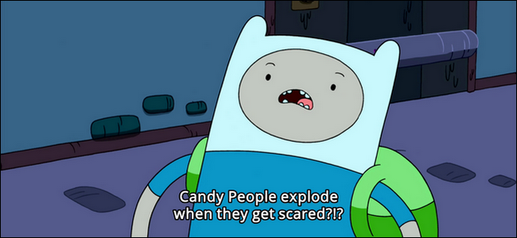
Whether you need subtitles to avoid waking up the kids or you’re awful at understanding regional accents, Plex Media Center makes it easy to download and use subtitles with all your movies and TV shows.
By default, Plex doesn’t automatically use existing subtitles or download new ones on your behalf. But with a few minor tweaks, you can set Plex to automatically download and use subtitles in a process so seamless that you never have to strain to understand what actors are saying again. Better yet, because Plex uses a centralized database, the changes you make and the subtitles you download are available across all your devices.
Plex is able to do this feat of automation magic thanks to a media scraping agent. Agents are little helper applications found on Plex (and other media server platforms) that analyze your media and use internet databases to locate information about that media—in this case identifying what a particular movie or TV episode is and then grabbing the appropriate subtitles for it.
Let’s take a look at how to turn subtitle support on, set up the subtitle agent, and ensure our library is up to date with subtitles for everything.
How to Turn Plex Subtitles On By Default
This step isn’t necessary—you can always toggle subtitles on and off using the on-screen menu while watching your Plex media—but if you went to the trouble of seeking out an article about Plex Media Server subtitles, it’s probably pretty safe to assume that you use subtitles a lot.
If you want to have subtitles on by default all the time (rather than toggling them on every time you watch a video), you can easily do so with a single server setting. While logged into your Plex Media Server’s web interface, click on the Settings icon in the upper right corner of the toolbar, select “Server” from the top navigation bar.
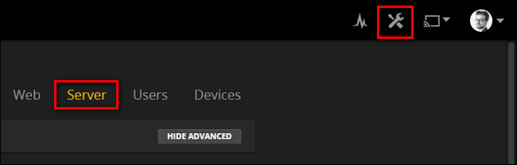
In the Server menu, select “Languages” in the left hand navigation column.
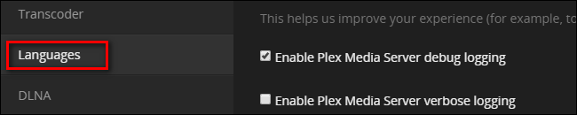
Within the Languages menu, you’ll find a single checkbox for “Automatically select audio and subtitle tracks”. Check the box. Confirm that the “Prefer audio track in” selection box is set to your preferred audio language. Under “Subtitle mode” you can set it to use subtitles only with foreign audio or with all media. Most people will want to go with the former, but if you’re reading this article and use subtitles for all your shows, you’ll probably want to pick the latter. Be sure to choose “always enabled”. Finally, select your preferred subtitle language and then click “Save Changes”.
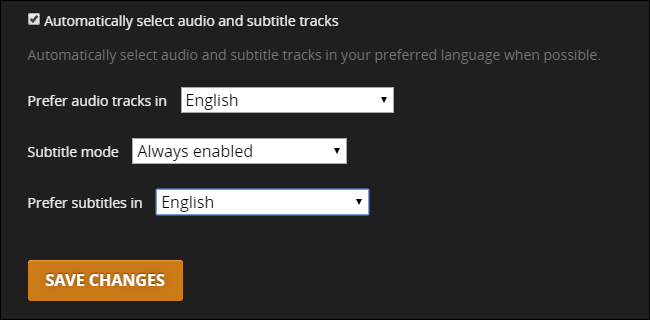
At this point, Plex will automatically use subtitles—if it finds them. If your media doesn’t all have subtitles, though, you’ll need to perform another step to complete the puzzle.
How to Enable Automatic Subtitle Downloads
While still in the Server menu from the last step, select “Agents” from the left hand navigation column.
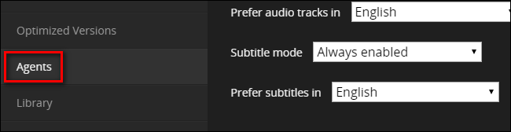
Within the Agents settings menu, click on “Movies” then “Plex Movie” to see which agents are active and in what order they are accessed. By default, the only one checked is “Plex Movie”, the native Plex agent.
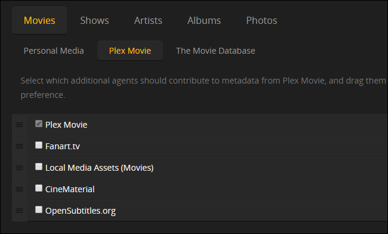
Check “OpenSubtitles.org” and drag it to the top of the list to both activate and prioritize it., like so:
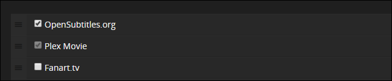
Once you’ve checked and placed the entry, click on the gear located on the far right of the OpenSubtitles entry.
![]()
This will open the preferences menu for your subtitles downloads. You can ignore the username and password bit and simply select the language or languages you wish your subtitles to be downloaded in. It’s important you perform this step, because the language preferences we set above in the Server > Language menu are not shared with the OpenSubtitles agent.
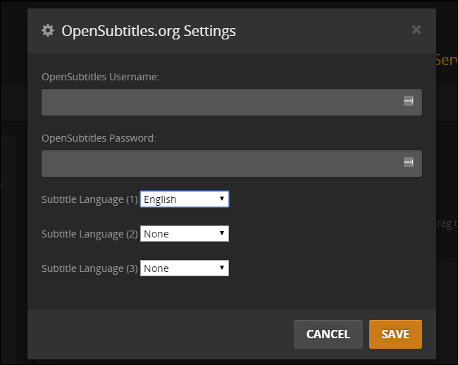
Repeat this process in the “Shows” category by selecting “TheTVDB” entry and checking/moving the OpenSubtitles entry again:
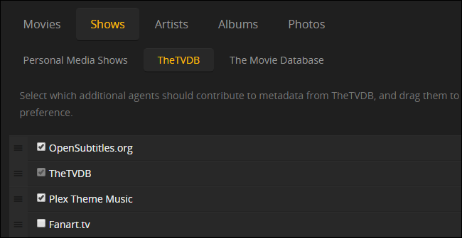
Your OpenSubtitles language selection from the Movies section should persist, but double check it anyway by clicking on the settings gear beside the agent entry again.
At this point, you’ve told Plex that you want it to automatically download subtitles for both movies and television shows through OpenSubtitles.org. There’s just one last step.
Refresh Your Libraries to Download Subtitles
Now that you’ve set everything up you may have noticed something. There are no subtitles to be found anywhere in the entries for your movies and TV shows. Pick any random show or movie from your collection and, in the library view of the Plex Media Server control panel, you’ll see entries like this everywhere:
The issue is that Plex only activates the metadata agents when either 1) the media enters your collection for the first time or 2) you initiate a manual refresh of the individual item, the season/collection it is in, or the entire library. While all new media will get automatic subtitle downloads without any intervention on your behalf, you’ll need to trigger a refresh of your library so the OpenSubtitles agent will activate on all your old media.
Select any and all libraries you wish to refresh with subtitles and look for the setting icon in the upper right corner. Click the icon and select “Refresh All”. Note that clicking the update icon, the little circular arrow, will not suffice as that will only look for new items that need metadata and subtitles, not check all your existing media for subtitles.
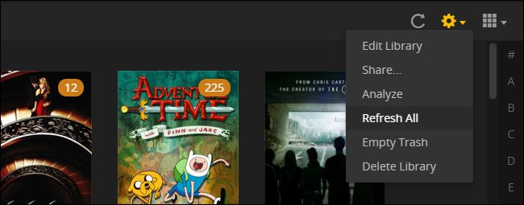
You’ll only have to do this once per library as, from now on per the settings we configured in the previous section, incoming media will get subtitles automatically.
Once you’ve refreshed your library, just pick a TV show or movie to watch and bask in the glory of automatic subtitles which, by our selection earlier in the tutorial, are on by default:
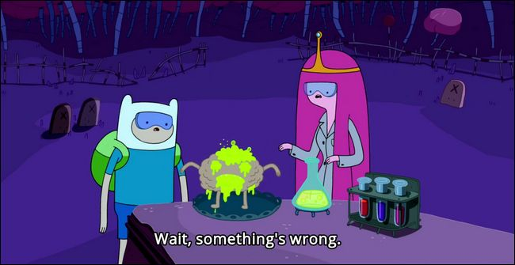
If the subtitles aren’t on because you opted to leave them off by default, don’t worry—they’re still there. While the process varies slightly based on what media client you’re using to connect to your Plex Media Server (e.g. Rasplex, the iOS Plex app, watching in your browser while connected to the Plex server), you should see a little comic book style speech bubble in the menu when you pause the media, like so:
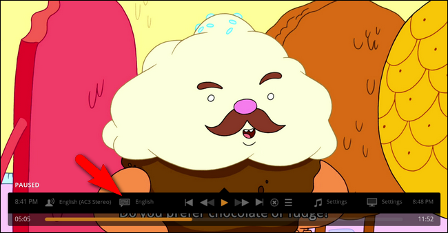
Select that icon to turn subtitles on and off or to switch between available subtitles.
That’s all there is to it: with a few adjustments in the settings menu you can enjoy automatically downloaded subtitles on all your movies and TV shows.
![]()
![]()
![]()
![]()
![]()
![]()
![]()
![]()
![]()
Awesome article Jason! The problem I have is that many of the shows & movies I have in PLEX are downloaded with Playon. They insert this 5-second disclaimer at the beginning of such videos and it throws off the subtitles. Any ideas? Thanks!
Kenny PuttHouston, TX
@strider56: Hmmm the absolute easiest solution, in terms of the minimal amount effort on your end of things, would be to use a Plex client that supports fine tuning of subtitle synchronization. Not all Plex clients do, unfortunately, but OpenPHT (the open source Plex client for Windows/Mac/Linux and the Raspberry Pi) has the ability to globally adjust the syncing of subtitles. This feature would be perfect for you as you could set a global delay of 5000 milliseconds on all subtitles and the subs would pause until the Playon disclaimer was done. I use RasPlex, the OpenPHT port to the Pi, and I absolutely love it--here's our tutorial on setting it up.
The less elegant solution (and certainly a much bigger hassle) would be to use a subtitle editing program or batch program of some kind to insert a delay in the front of every subtitle you have. Not only is that tedious, though, you'd have to do it again and again as Plex downloaded more subtitles. Not only does that sound painful but if you ever want to use those subtitles with non-Playon media you'll have to go back and undo all your work.
Good morning Jason,
Yes I've been using the brute force method with SubtitleEdit, except I've been downloading the subtitles manually. When I've sucessfully gotten Plex to auto-download them I haven't been able to find the SRT files.
I do like the Pi idea, except it would add a layer of complexity (beyond Roku) for my wife.
Love the articles and thanks for responding!
Ken